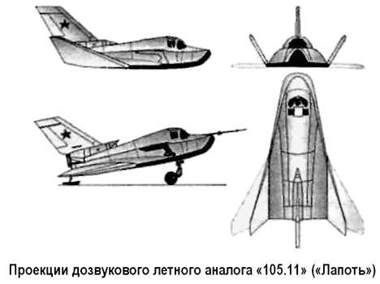
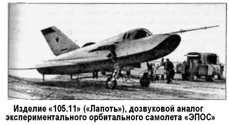

Изделие «105.11» («Лапоть»)
В связи с большой сложностью программы «Спираль» в эскизном проекте предусматривалась поэтапная отработка всей системы.
На первом этапе предусматривалось создание пилотируемого аналога орбитального самолета с ракетным двигателем, стартующего с самолета-носителя «Ту-95». Самолет-аналог не должен был иметь массо-габаритного и приборного сходства с ОС. Цель испытаний — оценка основных аэродинамических и силовых параметров ОС в условиях, близких к космическому полету (максимальная высота полета — 120 километров, максимальная скорость полета — от 6 до 8 Махов) и входу в атмосферу. Планировалось изготовить и испытать три самолета-аналога. Согласно плану первый полет на дозвуковой скорости должен был состояться в 1967 году, полет на сверхзвуке и гиперзвуке — в 1968 году. Стоимость работ — 18 миллионов рублей. Этот этап по сути являлся аналогом американского проекта «Х-15», но в отличие от последнего не был реализован в металле.
На втором этапе предусматривалось создание одноместного экспериментального пилотируемого орбитального самолета («ЭПОС»), предназначенного для натурной отработки конструкции и летного подтверждения характеристик основных систем ОС. Запуск «ЭПОС» собирались осуществить с помощью ракеты-носителя «Союз», при этом экспериментальный ОС должен был выйти на орбиту высотой 150–160 километров и наклонением 51°, совершить два или три витка, а затем выполнить спуск и посадку, как полноразмерный космоплан.
Планировалось изготовить и запустить четыре самолета в беспилотном (1969 год) и пилотируемом (1970 год) вариантах.
Стоимость работ — 65 миллионов рублей.
Параллельно с работами над орбитальным самолетом предполагалось создать и испытать полноразмерный гиперзвуковой самолет-разгонщик «50–50» с турбореактивными двигателями «РД-39-300», работающими на керосине (летные испытания четырех самолетов — в 1970 году, стоимость работ — 140 миллионов рублей). После накопления данных по аэродинамике и эксплуатации самолета на гиперзвуковой скорости планировался переход ГСР на водородное топливо, для чего необходимо было изготовить и испытать еще четыре самолета. Летные испытания ГСР на водороде должны были состояться в 1972 году, стоимость работ — 230 миллионов рублей.
На испытания полностью укомплектованной системы, состоящей из ГСР и ОС с ракетным ускорителем (все двигатели работают на керосине), отводился 1972 год.
После всесторонней отработки и проверки бортовых систем в 1973 году планировалось проведение летных испытаний полностью укомплектованной воздушно-космической системы с двигателями, работающими на водороде, и пилотируемым орбитальным самолетом.
В 1966 году к теме «Спираль» подключился Центральный аэрогидродинамический институт (ЦАГИ), где в то время директором был Владимир Мясищев и велись исследования аэродинамики летательных аппаратов на гиперзвуковых ско ростях.
ЦАГИ поддержал вышеописанную программу в своем официальном заключении, составленном в апреле того же года.
Бесчисленные испытания, начиная с лабораторных исследований, продувок моделей и аналогов в аэродинамических трубах ЦАГИ и кончая их стендовыми отработками применительно к разным режимам и этапам полета, позволили с высокой степенью достоверности определить аэродинамические характеристики планера орбитального самолета. Они же стали основой для разработчиков различных систем «ЭПОСа», создаваемого в ОКБ Микояна.
По первоначальному плану летных испытаний пилотируемых аналогов космоплана конструкторы собирались построить три самолета «ЭПОС»: дозвуковой аналог «105.11» для имитации атмосферного участка захода на посадку при возвращении с орбиты, сверхзвукового аналог «105.12» и гиперзвуковой аналог «105.13».
Для работ по этой теме из состава филиала в Дубне собрали группу в 150 человек, а ОКБ-155-1 выделили в самостоятельную организацию, ныне известную как конструкторское бюро «Радуга».
К сожалению, до летных испытаний удалось довести только первую из названных машин. Хотя самолет «105.12» был изготовлен полностью, он так и не принимал участия в испытаниях, а у «105.13» успели изготовить только фюзеляж.
Дело в том, что, несмотря на строгое технико-экономическое обоснование проекта, руководство страны быстро утратило интерес к теме «Спираль», бросив основные силы на лунную гонку с американцами. Сроки выполнения этапов программы оказались сорваны и над «Спиралью» нависла угроза закрытия.

Последнюю точку в ее истории мог бы поставить министр обороны Андрей Гречко, который, ознакомившись в начале 70-х годов с данными проекта, выразился ясно и однозначно: «Фантазиями мы заниматься не будем».
Однако новый импульс программе придало известие о том, что в США начаты работы над созданием космического корабля самолетной схемы «Спейс Шаттл» («Space Shuttle»). Благодаря усилиям министра авиапромышленности Алексея Минаева (выходца из ОКБ Микояна) было принято решение о проведении серии испытаний дозвукового аналога «105.11». Достроенный в 1974 году аналог «105.11» был выполнен по схеме «бесхвостка» с несущим корпусом, низкорасположенным треугольным крылом, однокилевым оперением, одним двигателем в хвостовой части фюзеляжа и четырехопорным шасси. Габариты экспериментального самолета были следующие: длина самолета — 8,5 метра, размах крыла — 6,4 (7,4) метра, высота — 3,5 метра, полный вес — 4220 килограммов.
Несущий фюзеляж имел стреловидную в плане форму (угол стреловидности — 78°) и сечения с закругленной верхней и практически плоской нижней частью. Фюзеляж состоял из четырех частей: носового отсека оборудования с кабиной, фермы с рамами, панелей с воздухозаборником ТРД и нижнего теплостойкого экрана.
Основной частью фюзеляжа является ферма с рамами из стали ВНС-2. В этом конструкция была схожа с американским «Х-20». Ферменную конструкцию выбрали из условий обеспечения максимального объема для размещения двигателя, топлива и оборудования.
В нижней центральной части расположили топливный бак-отсек, который входил в силовую часть фермы. В хвостовой части был размещен турбореактивный двигатель, воздухозаборник которого снабжен открываемой при работе двигателя створкой. Отсек оборудования с кабиной — обычной сварной конструкции из листовой стали ВНС-2 — соединялся с фермой пироболтами, образуя спасаемую капсулу. Пилот попадал в кабину через верхний люк. Панели и воздухозаборник ТРД (обычной дюралевой конструкции) закрывали ферму и крепились к ней на болтах. Экран, защищающий ферму от термодинамического нагрева и представляющий собой сварную панель из листовой стали с набором продольных и поперечных профилей, устанавливался снизу. С внутренней стороны экран покрывали термоизолирующим материалом.
Консоли крыла, имеющие угол стреловидности по передней кромке 55°, крепились к фюзеляжу, но могли поворачиваться на угол до 30° вверх в зависимости от режима полета. Привод поворота консолей крыла — электрический с червячным механизмом. Крыло снабжено элеронами для управления по крену. Вертикальное оперение включало киль площадью 1,7 м2 с углом стреловидности по передней кромке 60° и руль направления. На верхней поверхности хвостовой части фюзеляжа были расположены балансировочные щитки, отклоняемые вверх. Система управления самолетом — ручная от традиционной ручки и педалей «самолетного» типа.
Шасси — четырехопорное, убираемое, лыжное. Для взлета с земли в начале летных испытаний на передних опорах устанавливались колеса. Передние опоры убирались поворотом назад в ниши боковых панелей фюзеляжа выше теплозащитного экрана, хвостовые — за задний обрез фюзеляжа. Выпуск шасси производился с помощью пневмосистемы.

Силовая установка самолета «105.11» состояла из турбореактивного двигателя «РД36-35К» конструкции Колесова с тягой 2000 (2350) килограммов и весом 176 килограммов.
Топливо для ТРД размещалось в баке в средней части фюзеляжа Запаса топлива (500 килограммов) хватало на 10 минут крейсерского полета при полной тяге. С помощью этого двигателя осуществлялся и взлет с поверхности (с использованием колесного шасси, закрепляемого на передних полозьях).
Оборудование самолета включало стандартный набор пилотажно-навигационных приборов, размещенных на приборной доске в кабине летчика.
Испытания аналога проводились на полигоне ГНИИ ВВС в городе Ахтубинске Астраханской области. В ОКБ Микояна была сформирована группа из летчиков-испытателей, которым предстояло пилотировать опытный образец «105.11», который к тому времени получил ласковое прозвище «Лапоть». Первоначально планировалось, что в первый испытательный полет пойдет шеф-пилот ОКБ Александр Федотов, но Минаев официально запретил ему это делать, сославшись на то, что испытания изделия «105.11» не являются приоритетными для ОКБ. В результате «Лапоть» в его первом вылете пилотировал Авиард (Алик) Фастовец.
Перед тем летчики — Авиард Фастовец и его дублер Валерий Меницкий — прошли подготовку в летающей лаборатории, в качестве которой использовался обыкновенный «МиГ-21» с заклеенным фонарем — по замыслу конструкторов, модель должна была подниматься в небо обычным путем, затем на ее фонарь опускались специальные жаропрочные шторки, модель переходила в режим челночного планирования, в ходе которого отрабатывалась траектория полета и приземления будущего аппарата.
Первый этап испытаний — пробежки с постоянным увеличением скорости разбега и, наконец, подлет. Испытания проводились на ровной грунтовой взлетно-посадочной полосе длиной 5 километров и шириной 500 метров. Вдоль всей длины полоса была отмаркирована окрашенными конусами, расставленными через каждые 200 метров. Никаких внешних измерительных устройств не имелось. Кроме того, ВПП находилась в степи в 30 километрах от основной базы. Перед каждой пробежкой аналог на основной базе со снятым килем грузился с помощью крана на трейлер и в сопровождении кавалькады автомобилей специального назначения отправлялся малой скоростью на ВПП. Там ставился на грунт, к нему пристыковывался киль, велись различные монтажные работы, и только после пробного запуска двигателя и проверки всех систем летчик занимал место в кабине. Проведение одной пробежки занимало фактически весь день.
Длина ВПП позволяла аппарату находиться в воздухе не более 10–15 секунд, но и эти секунды показали удовлетворительные характеристики аналога. Посадка и пробег прошли гораздо успешнее, чем при моделировании на пилотажном стенде «МК-10» в ЦАГИ, где имелась проблема с выдерживанием заданной высоты полета.
В 1976 году на аппарате «105.11» было выполнено 15 пробежек и 10 подлетов. Наряду с микояновцами в испытаниях участвовали и военные летчики, и инженеры ГНИИ ВВС. Но основная нагрузка легла на плечи Авиарда Фастовца.
Об этих испытаниях вспоминает Валерий Меницкий:
«Не обошлось без юмора. «Лаптю» надо было сделать специальное шасси, потому что в качестве посадочного инструмента у него предусматривались лыжи-«тарелки». И чтобы улучшить его разбег, мы собирали арбузные корки и выкладывали их на ВПП для уменьшения трения о грунт».
Наконец 11 октября 1976 году Авиард Фастовец поднял «105.11» в воздух, совершив перелет с одной грунтовой ВПП на другую. Перелет протяженностью 19 километров проходил на высоте 560 метров.
В следующем году испытатели приступили к полетам на подвеске у самолета «Ту-95КМ». Подвеска «105.11» под фюзеляжем «Ту-95К» была полувнешней: кабина до половины остекления уходила за обрез бомбоотсека, с которого были сняты створки. Вначале в полетах без отцепки проверялись возможности только выпуска «ЭПОСа» в воздушный поток на специально удлиненных держателях и включение в таком положении его двигателя. Так как воздухозаборник оказался в бомбоотсеке, для обеспечения запуска двигателя пришлось смонтировать дополнительную систему наддува. Летчик переходил из «Ту-95» в кабину орбитального самолета непосредственно перед сбрасыванием. 27 октября 1977 года самолет-носитель «Ту-95К», пилотируемый экипажем во главе с заместителем начальника службы летных испытаний подполковником Обеловым, впервые сбросил аналог «105.11», пилотируемый Фастовцом, с высоты 5000 метров в створ посадочной глиссады аэродрома. Балансировочный щиток был заранее установлен на пикирование, и «Лапоть» резво нырнул вниз со скоростью 70 м/с.
Позднее состоялось еще девять полетов аналога с отцепкой от носителя.
В 1978 году летные испытания изделия «105.11» были завершены. Окончание серии экспериментов случайно совпало с его поломкой при посадке в сентябре 1978 года. В тот раз его пилотировал военный летчик-испытатель полковник Урядов. Наблюдал за ним, сопровождая в полете на «МиГ-23», Авиард Фастовец. Заходить на посадку пришлось против закатного солнца, видимость ограничивала дымка.
Ошибка руководителя полетов, который принял уклонившийся влево «МиГ-23» Фастовца за «Лапоть», привела к тому, что аппарат ударился о грунт. При этом он не разрушился — обошлось лишь трещиной в районе силового шпангоута.
Только летать ему все равно уже больше не пришлось.
С 1976 года в СССР развернулись работы по созданию воздушно-космического самолета «Буран» принципиально иного типа, и в 1979 году тема «Спираль» была окончательно закрыта. В настоящее время аппарат «105.11» находится в музее ВВС (город Монино, Московская область).
В общей сложности на программу «Спираль» было затрачено более 75 миллионов рублей. Но не следует думать, будто эти капиталовложения пропали даром. Была создана материальная база, проверены методики испытаний, подготовлены специалисты. Эти люди впоследствии построили и запустили космический корабль «Буран».